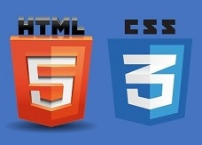
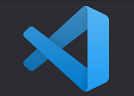
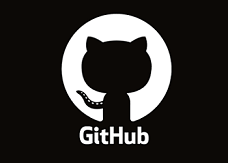
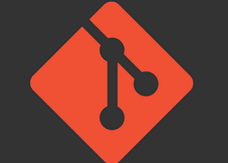
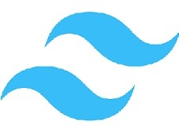

O mně
Jmenuji se Jakub Šrámek a mojí velkou ambicí je živit se jako programátor a tvořit webové stránky.
Po absolvování střední školy se zaměřením na informatiku a ekonomiku v Ledeč nad Sázavou jsem se specializoval na tvorbu webových stránek s použitím HTML a CSS. Dále jsem získal certifikáty pro efektivní práci s kancelářskými programy (Word, Excel).
V roce 2023 jsem se rozhodl dát své kariéře nový směr a vylepšit své programátorské schopnosti. Absolvoval jsem intenzivní kurz od ITnetwork zaměřený na JavaScript a zároveň jsem si osvěžil znalosti HTML a CSS. Získal jsem základní povědomí o Git a GitHub.
Úspěšně jsem dokončil zkoušku, která zahrnovala tvorbu projektu a závěrečný test.
V roce 2024 jsem rozšířil své dovednosti v TailWindu a naučil se základy TypeScriptu.
Můj cíl je naplňovat svůj život práci, která mě opravdu baví. V programování vidím nejen budoucnost, ale i šanci na osobní rozvoj a lepší životní podmínky.
Pokud Vás zaujala má vize, neváhejte mě KONTAKTOVAT, rád se podělím o své zkušenosti.
Moje záliby
Mimo programování rád relaxuji při rybaření a sportuji, zejména jezdím na kole, procházím se a cvičím.
Projekty
Momentálně se aktivně věnuji rozšiřování svých znalostí v oblasti Reactu.
Dovednosti
|  |

|
|
HTML a CSSZnalosti ze střední škole, díky tomu umím tvořit webové stránky. |
JavaScriptVzdělávám se pomocí tutoriálů a videí. Dokáži tvořit jednoduché konzolové. |
ReactVzdělávám se pomocí videí a stálým opakováním. |
|  |  |  |
VSCPomocí Visual Studio Code umím tvořit webové stránky pomocí HTML, CSS, JS a Reactu. |
GitHubZnalost základních příkazů gitHubu a nahrávání obashu na svůj web. |
GitZnalost základních příkazů Gitu. |
|  | ||
TailWindTvorba stránek pomocí tohoto nástroje. |
BootstrapZákladní znalosti. |
TypeScriptZákladní znalosti. |
Projekty
Jsem tu, abych Vám pomohl přivést Vaše webové projekty k životu.
Níže můžete sledovat pár ukázkek mé dosavadní práce. S každým novým projektem se snažím zdokonalovat a rozšiřovat své portfolio a zkušenosti. Vaše vize je pro mě výzvou, které se rád věnuji.

{kind=link}
{kind=link}
{kind=link}
{kind=link}
{kind=link}
{kind=link}
{kind=link}
{kind=link}
Kontakt
Chcete-li se dozvědět více, neváhejte a kontaktujte mě. Budu rád za každou zpětnou vazbu a možnou spolupráci.
jakiz.jakub@seznam.cz